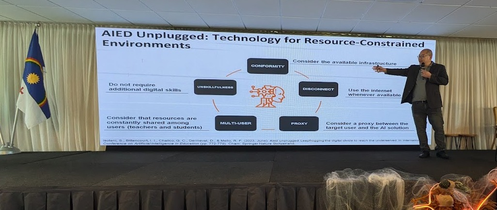
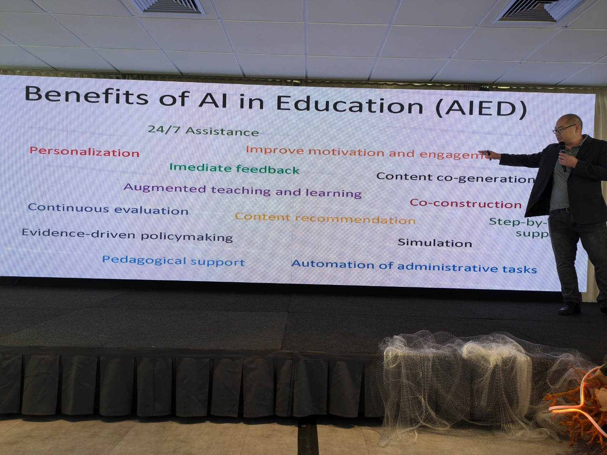

25ª Conferência Internacional sobre IA na Educação
Recife, 8-12 de julho de 2023
Tema: "IA na Educação para um Mundo em Transição"
Visão Geral
- Cerca de 400 pesquisadores globais
- Primeira vez na América Latina
- Organizado pela CESAR School, UFRPE e UFAM
Destaques
- Foco na redução da desigualdade de aprendizagem
- Apresentação do conceito "AIED Unplugged"
- Importância da pesquisa aplicada
- Importância de diretrizes para uso de IA pelas instituições educacionais
- Professores "in the loop". Tem sido reforçada a importância de manter a autonomia de professores na interação com recursos de IA
- Anúncio do primeiro presidente brasileiro da AIED Society
AIED Unplugged

“Precisamos criar tecnologias que se adaptem às realidades das escolas brasileiras”
AIED Unplugged
- Integração de IA em ecossistemas educacionais existentes
- Não requer infraestrutura complexa ou internet constante
- Aplicada em reforma educacional no Brasil
- Impacto: mais de 500 mil alunos em 7 mil escolas

Relevância: Solução prática para a realidade de muitas escolas brasileiras com recursos limitados
Pesquisas em Educação Matemática
1. Knowledge Tracing Unplugged
- Rastreamento de Conhecimento em ambientes com recursos limitados
- Foco em educação de numeramento
Relevância: Aborda lacunas de aprendizagem exacerbadas pela pandemia da COVID-19 no Brasil
Pesquisas em Educação Matemática (cont.)
2. Reconhecimento de Expressões Matemáticas Manuscritas
- Otimização para equações do ensino fundamental
- Aborda desafios únicos da caligrafia infantil
Relevância: Possibilita avaliação automatizada em escolas brasileiras com recursos limitados
Pesquisas em Educação Matemática (cont.)
3. Detecção de Equações Manuscritas em Dispositivos Móveis
- Uso de dispositivos móveis de baixo custo e desconectados
- Alinhado com os princípios do AIED Unplugged
Relevância: Solução prática para escolas brasileiras com infraestrutura digital limitada
Sistemas de Tutoria Inteligente
1. Jill Watson: Assistente Virtual de Ensino
- Baseado em ChatGPT
- Responde dúvidas em salas de aula online e livros didáticos inteligentes
Relevância: Oferece suporte 24/7 aos estudantes brasileiros, especialmente em turmas grandes
Sistemas de Tutoria Inteligente (cont.)
2. Geração de Perguntas Adaptativas
- Uso de LLMs para gerar perguntas de acompanhamento
- Promove pensamento reflexivo nos alunos
Relevância: Pode melhorar o engajamento e compreensão dos alunos brasileiros em sistemas de tutoria
MOOCs
1. Análise de Equidade nas Previsões de Conclusão de Cursos
- Considera variáveis demográficas e contextuais
- Destaca potenciais preconceitos contra grupos sub-representados
Relevância: Essencial para garantir que MOOCs beneficiem equitativamente todos os alunos brasileiros
MOOCs (cont.)
2. LANSE: Plataforma para Identificação de Alunos em Risco
- Identifica alunos em risco de abandono ou fracasso
- Aplicável em sistemas de gestão de aprendizagem e MOOCs
Relevância: Pode melhorar as taxas de retenção em MOOCs oferecidos no Brasil
Impacto Potencial na Educação Pública Brasileira
- Personalização do ensino em escolas com infraestrutura limitada
- Avaliação automatizada de trabalhos manuscritos de matemática
- Suporte 24/7 aos alunos através de assistentes virtuais
- Promoção de equidade no acesso a oportunidades de aprendizagem online
- Melhoria na identificação e apoio a alunos em risco
Considerações Éticas e Futuro do AIED
Ética
- Abordar vieses em aplicações AIED
- Garantir privacidade e segurança de dados
- Promover transparência e responsabilidade
Futuro
- Integração de LLMs e IA generativa
- Soluções para ambientes com recursos limitados
- Personalização em larga escala
- Promoção de equidade e inclusão